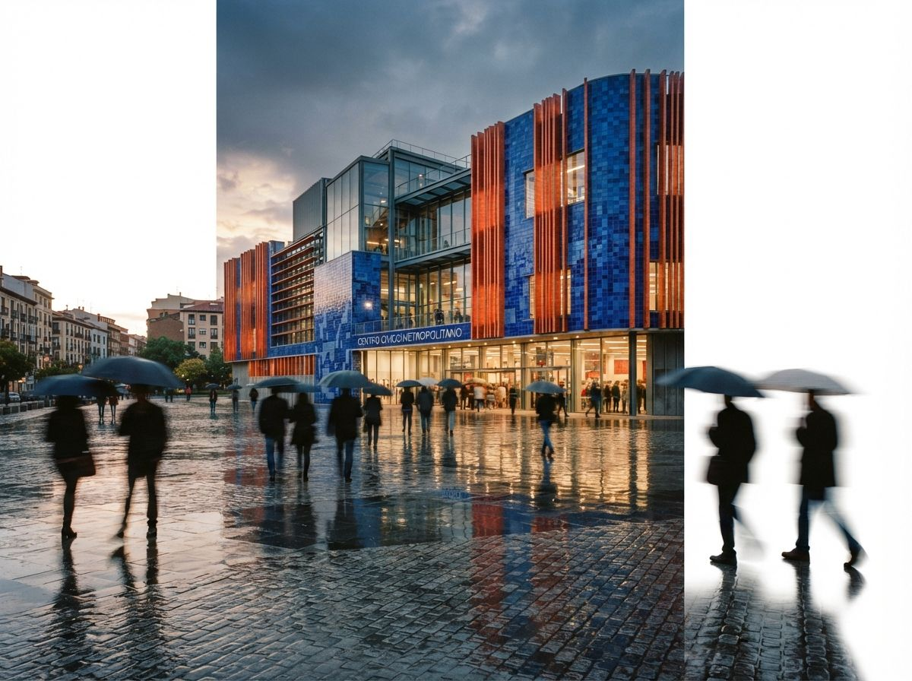
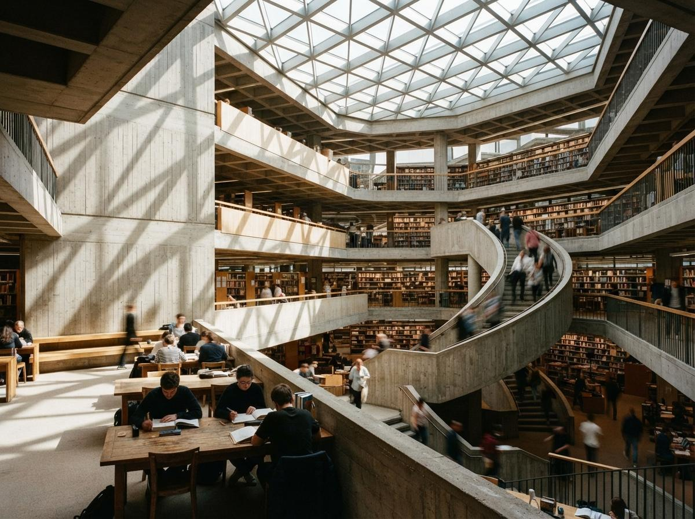

Architects already work this way with people. Nobody briefs a visualizer with a paragraph of adjectives. You send precedent images: this facade's brick, this photo's dusk, this lobby's furniture density. The reference image feature that is now standard across AI render tools is the same conversation, held with a model instead of a person. The Evolve Labs release notes for Veras put it plainly: add up to four reference images per render to steer the output toward a specific look, material, or mood. That single sentence is a bigger change to daily practice than most of the engine upgrades that got louder announcements, because it moves the steering wheel from the prompt box, where architects are amateurs, to the precedent image, where architects have been fluent for a century.
Two jobs, one word
The confusion starts because "reference" covers two jobs that behave nothing alike, and mixing them is the fastest way to a bad output.
Style reference answers "what should this feel like?" It carries lighting mood, material character, color palette, grain, and finish from the reference onto your scene. The geometry of the reference is supposed to be ignored. This is what Veras ref images, Midjourney's style reference, and a style-weighted IPAdapter pass all do, with varying obedience.
Content reference answers "what is this thing?" It carries identity: this specific building, this chair, this person, held consistent across new views. Midjourney's omni reference and identity-weighted IPAdapter setups do this. It is the harder problem, and it is the one you actually need when a client has approved view one and you are producing views two through six. We covered that battle separately in the piece on set consistency across views.
Decide which job you are hiring the reference for before you attach it. An image you love as a mood will wreck the render if the tool reads it as content, because now it is trying to put that building in your scene. Most tools default to style. Check anyway.

The three routes in 2026
| Route | What it steers well | Where it breaks |
|---|---|---|
| Veras ref images (up to 4 per render) | Material, mood, and finish applied onto geometry the plugin reads from your BIM model | Least granular control; references influence the whole frame, not a masked region |
| Midjourney sref / omni | Strong, repeatable style transfer for concept imagery; omni holds an object's identity | No geometry input at all; your building is a description, so this stays a concept tool |
| ComfyUI IPAdapter | Per-reference weight, style split from composition, stackable with ControlNet | Setup cost; a wrong weight quietly overpowers the prompt and the model |
The pattern to notice: the routes differ in where geometry comes from, not in what a reference does. Veras reads structure from the model you already built, which is why it stays the working-architect route. Midjourney has no structure to read, which is why its references produce beautiful cousins of your building rather than your building. IPAdapter sits between, doing whatever you wire it to do, which is both the pitch and the warning. If you are weighing that last trade in general, the enhancer versus pipeline piece is the longer answer.
What makes a reference good
The instinct is to feed the model finished renders you admire. It is the wrong instinct. A finished render answers every question at once: light, material, palette, entourage, framing, grade. Attach two of them and they disagree on most of those axes, so the model averages, and averages read as mush. The references that behave are the ones that answer one question each.
- A material close-up. A phone photo of the actual brick sample on your desk beats a downloaded glamour shot of "brick." It carries the real coursing scale and the real color under real light, and it is defensible when the client asks where the finish came from. Pair it with the material study workflow and the reference kit starts doing specification work, not just mood work.
- A lighting reference. One photograph whose hour, weather, and shadow softness you want. Nothing else in the image should be interesting, because everything interesting leaks.
- A context photo. The actual site, the actual street trees, the actual sky your building will sit under. This is the cheapest realism gain available, and almost nobody uses it.
Three or four of these together work because they divide the labor. And when one comes back overrepresented, the same brick suddenly covering the neighbor's building too, drop the reference weight before you touch the prompt. In every tool we have tested, reference strength beats prompt wording once both are in play.
A good reference answers one question. A finished render answers all of them at once, which is exactly why it makes a terrible reference.

The thing no reference can hold
A reference steers surface. It does not steer structure. If the model is moving your roofline, thickening your mullions, or inventing a cornice, no reference image will stop it, because references feed the "what should this look like" channel and geometry drift is a failure in the "what is this" channel. Structure is held by the model you gave the plugin, by a ControlNet pass, or by the tool's adherence slider, and by nothing else. We keep meeting architects who stack more and more beautiful references onto a drifting render, and the drift never improves, because they are turning the wrong knob. That knob has its own piece: model adherence controls, and for Veras specifically, the design lock walkthrough.
The clean mental model: adherence decides what the building is. References decide what the world made it out of and what hour you photographed it. Prompts fill whatever gaps are left. That is also the order of precedence worth fighting for. If a reference and your geometry disagree, geometry must win, and any tool where it does not is a concept tool wearing a production tool's marketing.
Build the kit once
The practical move is to stop attaching references ad hoc and build a small kit per project, the same way the office already keeps a physical material board. Five images in a project folder: brick or cladding close-up, interior finish close-up, lighting mood, site context, entourage style. Version it. When a render works, note which references were attached at what strength, exactly the way we argued you should version wording in the prompt library piece. The prompt library and the reference kit are the same idea in two media, and the reference half is now the more powerful half.
It also travels. The kit you assemble for Veras works in IPAdapter and mostly works in Midjourney, because it encodes decisions about the project, not settings of a tool. Tools rotate quarterly. The decision about which brick and which hour of light does not.
Our take
Prompt engineering was never a skill architects needed to acquire. It was a workaround for a missing input channel, and the profession spent three years getting oddly good at it. Reference images close that gap with the input architects have used since before any of this existed: the precedent image, the material sample, the photo of the light you want. The tools did not teach architects a new language this time. They finally learned the old one.
Your best prompt was always pinned to the studio wall. Now you can attach it.
Written from the July 7, 2026 intel sweep: the Evolve Labs forum notes on Veras reference images (up to four per render) and recurring community threads on steering output toward a specific look. Tool behavior checked against prior ArchiGen testing of Veras, Midjourney, and IPAdapter workflows. No affiliate relationship with any tool named.